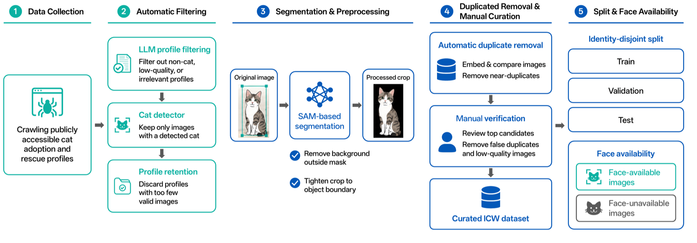

75.93%
Top-1 accuracyICW full test set
Individual appearance varies with imaging conditions, making a single representation insufficient to capture all identity cues.
MeowID models facial detail and whole-cat appearance with separately parameterized experts. Facial evidence is prioritized when alignment succeeds; global appearance supplies complementary context and a robust fallback route.
The system preserves fine-grained facial discrimination while retaining coverage for unconstrained images.
Face evidence is fused with a whole-cat hint before face-gallery retrieval.
Nine landmarks normalize translation, in-plane rotation, and scale into a 256 × 256 aligned crop.
Separate DINOv3 ViT-B/16 encoders produce 512-dimensional face and whole-cat embeddings.
A sample-dependent gate contributes global context while preserving the face representation.
Similarity search ranks identities; new individuals can be enrolled without model retraining.
ICW is an identity-disjoint benchmark collected from six public adoption and rescue platforms. Multiple observations per identity capture practical variation in pose, viewpoint, background, illumination, camera, and occlusion.
View on Hugging Face View on ModelScope
MeowID achieves the best Top-1 accuracy and mAP on the full ICW test set while retaining valid retrieval for all queries without detectable faces.
+4.07 percentage points in Top-1 accuracy over PetFace.
Ground-truth rank improved for 537 queries and degraded for 82.
| Model | Top-1 ↑ | Top-5% ↑ | Top-50% ↑ | mAP ↑ |
|---|---|---|---|---|
| MegaDescriptor | 56.85 | 89.78 | 99.75 | 65.45 |
| NekoNet | 57.24 | 89.88 | 94.45 | 67.48 |
| PetFace | 71.86 | 90.62 | 94.31 | 78.08 |
| MeowID-Base | 75.93 | 90.72 | 96.52 | 80.45 |
On PetFace verification, the MeowID embedding formulation reaches 94.94% average AUC and outperforms the family-specific PetFace-ArcFace baseline across all evaluated families.
Latency includes decoding, preprocessing, face localization, alignment, embedding extraction, and routing.
Use the following reference when building on this work.
@article{hu2026meowid,
title = {MeowID: A Dual-Expert Retrieval System
for Individual Cat Identification},
author = {Hu, Zhangchi and Shang, Yi and Yang, Haocheng
and Hu, Qiwei and Li, Yuzheng},
year = {2026}
}